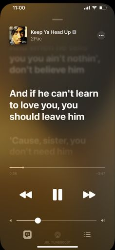
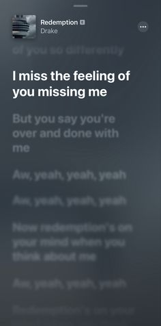
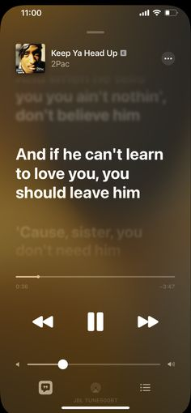
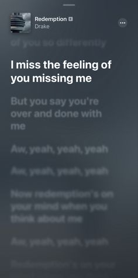

i picked these songs because i feel like pepole can relate to the words because i know i can and it also makes you remember that sometimes you got let go of pepole you think you need but you actually dont need them and they need you and they are going to relize that they need you more then you need them but sometimes its the other way.